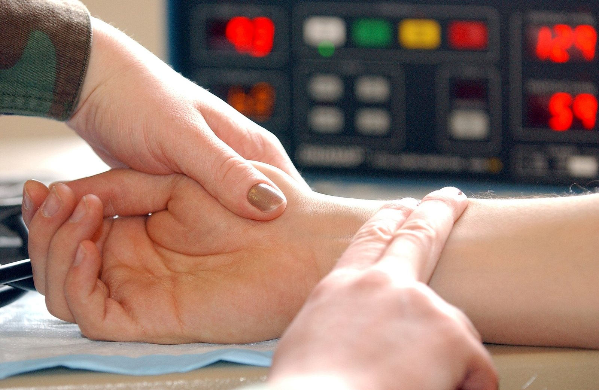

When you need more energy, like during a race, how do your body systems team up to deliver it?
Keep this question in mind while you work today.
1describe what the respiratory, circulatory, and digestive systems do.
2measure how my heartbeat and breathing change with exercise.
3build a model that shows how body systems work together.
Try this: put two fingers on the side of your neck, just under your jaw. Feel that thump? That's your heart pushing blood through your body.
Now picture yourself sprinting across a field. Your heart, lungs, and muscles all change at once. Today you'll measure those changes and build a model of how your body systems team up.
Write your prediction below. Use at least two sentences. Predict what will happen to your heartbeat and your breathing after one minute of exercise. Explain which body systems you think are working together.
You met some of these ideas yesterday. Today you'll use them to build a model. Tap each card to flip it if you need a quick refresher.
Quick reminder: If you have a health reason not to exercise, march slowly in place or move your arms instead. You can still collect data.
A body systembody systemA team of organs that work together to do one big job. is a team of organs that share one big job. Your respiratory system (nose, windpipe, lungs) brings in oxygen. Your digestive system (mouth, stomach, intestines) breaks food into nutrients.
Your circulatory system (heart, blood vessels, blood) is the delivery service. It carries that oxygen and those nutrients to every part of you.
Blood also picks up wastes. Your kidneys clean wastes out of the blood, and your bladder stores them until you go to the bathroom.
You can't watch your organs work, so scientists use models. A box-and-arrow model shows each system as a box. Arrows show what moves between them, like oxygen or nutrients.
A model lets you see the whole team at once. It also helps you predict: if one box stops working, which boxes feel it next?
A model on paper is flat and still. Your real body is busy and fast. Your blood makes a full trip around your body in about one minute.
A simple model also skips tiny parts, like cells, and lots of systems working at the same time. That's fine. A good model shows the big idea and is honest about what it leaves out.
Real-World Connection: Doctors use models of the heart and lungs to plan surgeries and to explain health problems to patients and families.
Body systems are teams of organs that depend on each other. The respiratory and digestive systems bring in oxygen and nutrients. The circulatory system delivers them to the muscles and every other part of the body.
Here is a box-and-arrow model of your body during a race. Tap each box to see its job on the team.
Tap each box to see what that system does during a race.
Time to collect real data from your own body. You'll measure your heartbeat and breathing at rest, move for one minute, and measure again. Then you'll build a model that explains what changed.

Measure at rest
Sit still for one minute. Find your pulse and count the beats for 15 seconds. Then count your breaths for 30 seconds. Write both numbers in the table.
Move for one minute
Do jumping jacks or march fast in place for one full minute. If you can't do jumping jacks, do fast arm circles instead.
Measure again right away
As soon as you stop, count your pulse for 15 seconds and your breaths for 30 seconds. Then multiply each pulse count by 4 to get beats per minute.
| Measurement | At rest | After 1 minute of exercise | Change |
|---|---|---|---|
| ❤️ Heartbeats in 15 seconds | |||
| ❤️ Heartbeats per minute (×4) | |||
| 🫁 Breaths in 30 seconds |
Build your model
Draw boxes for the lungs, the stomach and intestines, the heart and blood, and the muscles. Add arrows and label what moves along each one: oxygen or nutrients.
Connect it to your data
Next to your model, write one sentence explaining how your model shows why your numbers went up.
Answer in complete sentences. Use your body data table and your model.
Think about these. Be ready to explain your reasoning out loud or in your notebook.
📐 Part A — Body Systems Model
Use the model and data from the Investigate tab. Open your notebook to a clean page.
📊 Part B — Evidence Questions
Answer in complete sentences using your model.
✍️ Part C — Claim · Evidence · Reasoning
Write your scientific explanation. Aim for 4–6 sentences total.
📋 Write in your own words. Use your model.
Your claim📋 Use your heartbeat or breathing data and at least one arrow from your model.
Your evidence📋 Explain how the systems depend on each other.
Your reasoningWrite 3–4 sentences answering these:
- What did you predict about your heartbeat and breathing? Were you right?
- What surprised you about your data?
- How does your model explain what you measured?